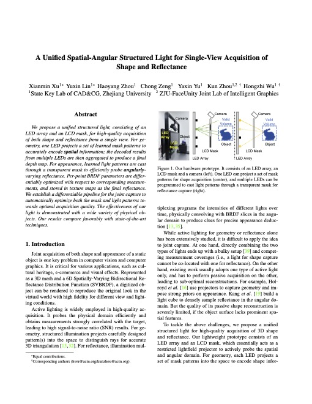
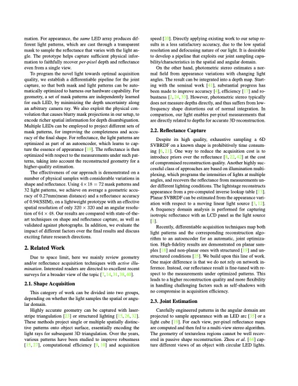
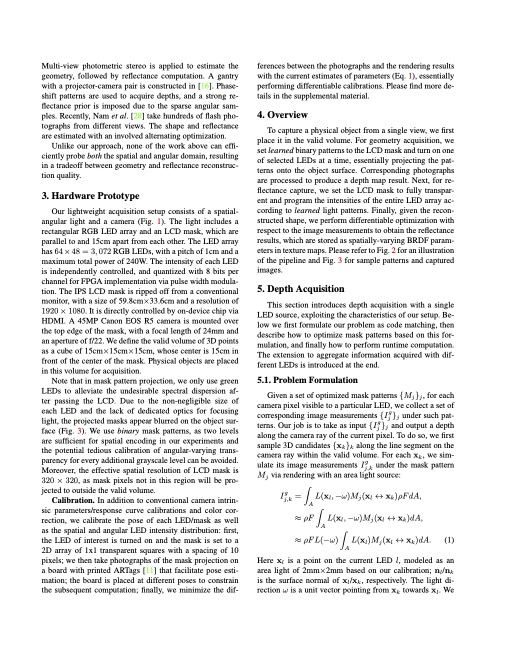
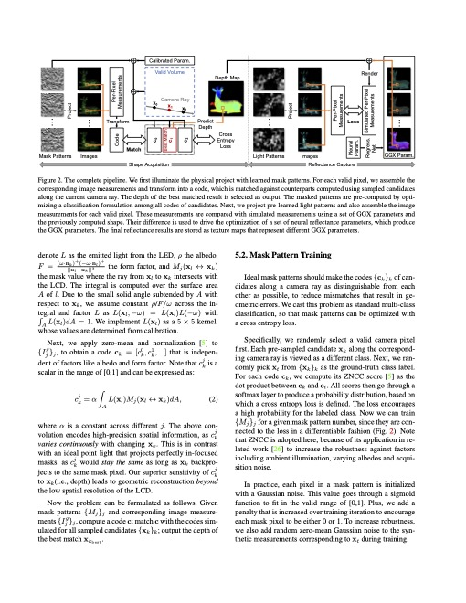
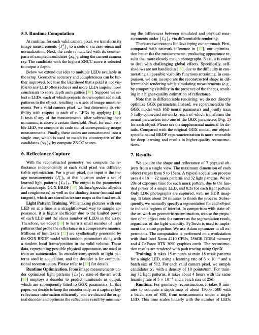
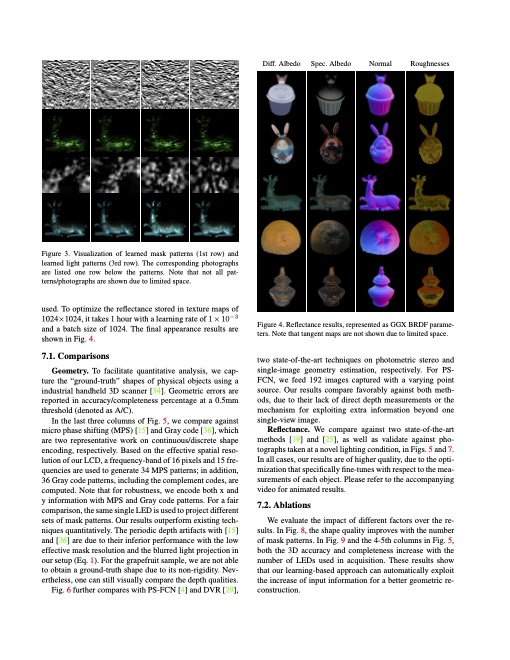
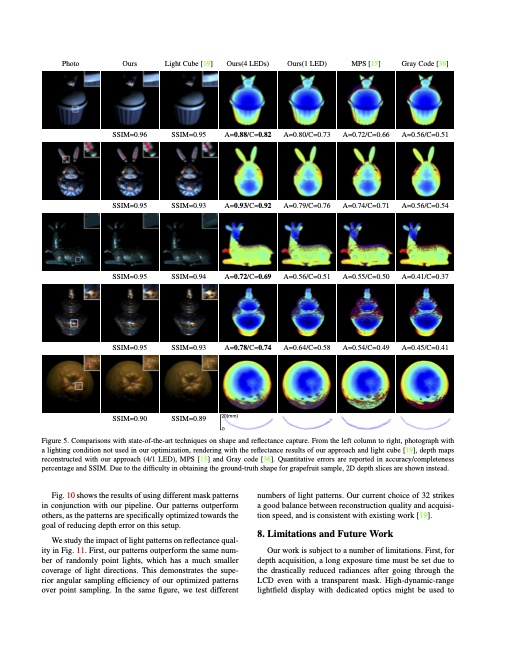
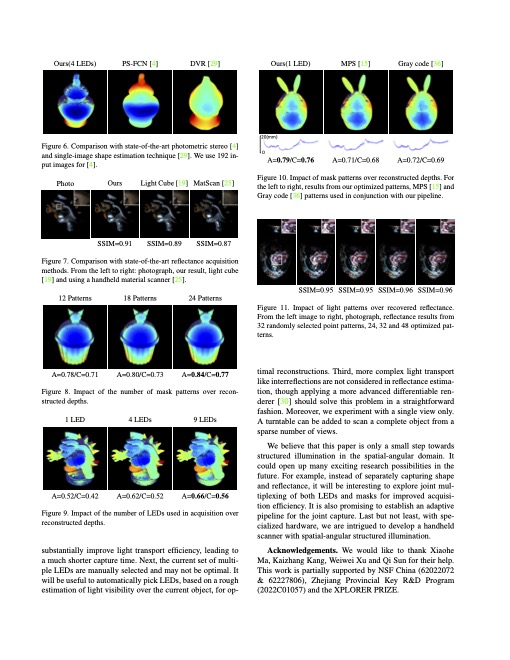
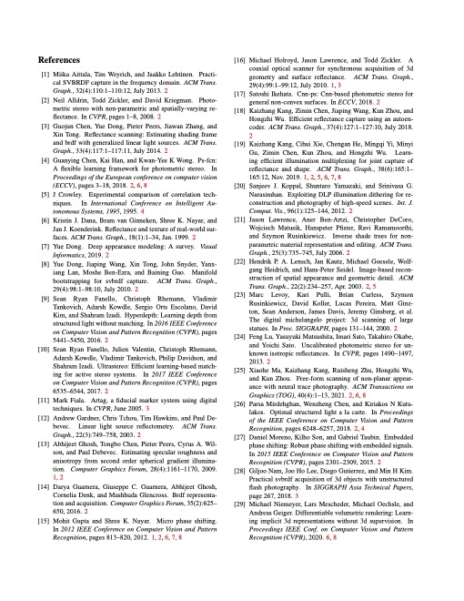
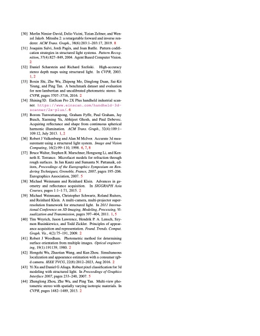

A Unified Spatial-Angular Structured Light for Single-View Acquisition of Shape and Reflectance
Xianmin Xu,
Yuxin Lin,
Haoyang Zhou,
Chong Zeng,
Yaxin Yu,
Kun Zhou and
Hongzhi Wu CVPR 2023.
Patent Pending.










Abstract
We propose a unified structured light, consisting of an LED array and an LCD mask, for high-quality acquisition of both shape and reflectance from a single view. For geometry, one LED projects a set of learned mask patterns to accurately encode spatial information; the decoded results from multiple LEDs are then aggregated to produce a final depth map. For appearance, learned light patterns are cast through a transparent mask to efficiently probe angularly- varying reflectance. Per-point BRDF parameters are differentiably optimized with respect to corresponding measurements, and stored in texture maps as the final reflectance. We establish a differentiable pipeline for the joint capture to automatically optimize both the mask and light patterns to- wards optimal acquisition quality. The effectiveness of our light is demonstrated with a wide variety of physical objects. Our results compare favorably with state-of-the-art techniques.